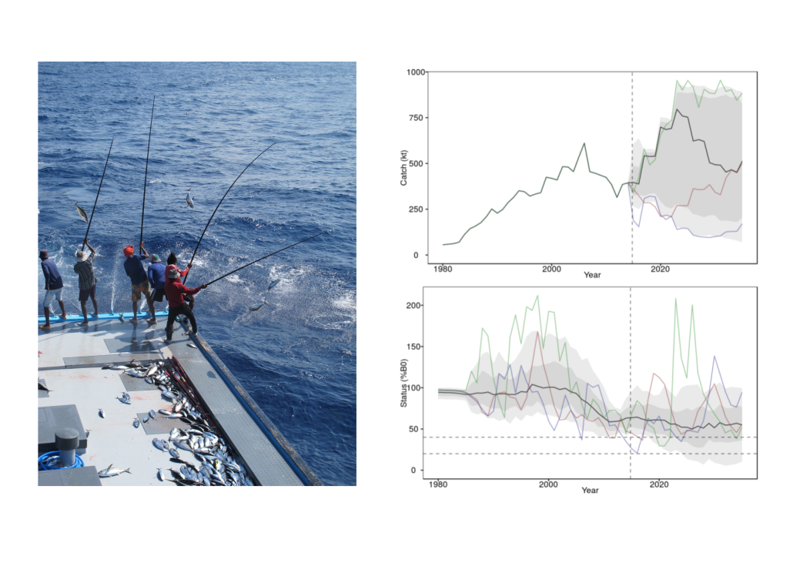
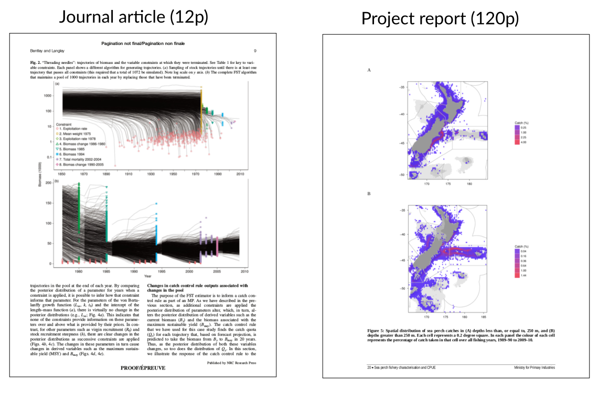
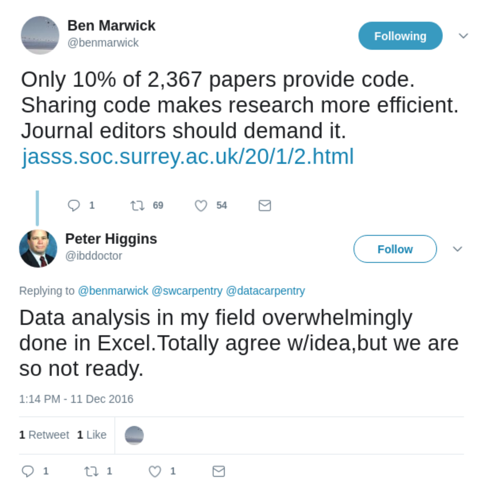
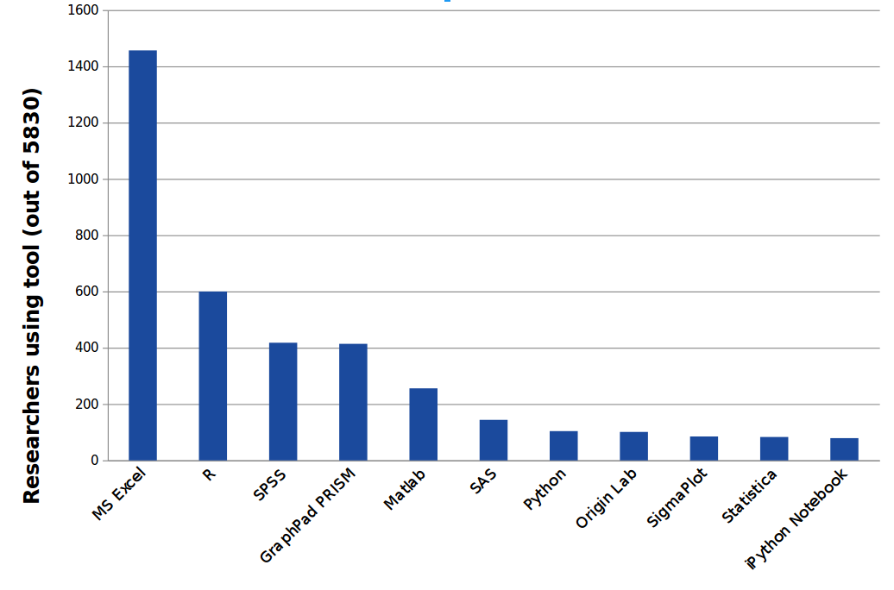

class: center, middle ## Bridging the reproducibility gap: a hands on introduction to Stencila <img src="logo-name.svg" width="400" /> #### [eResearch NZ 2018](http://eresearch2018.org.nz/) #### Queenstown, New Zealand #### 14 February 2018 <div> <a href="https://twitter.com/NokomeBentley">@NokomeBentley</a> <a href="https://twitter.com/stencila">@stencila</a> </div> <p style="position: absolute; bottom: 10px; font-size: 10px">Press <code>P</code> to switch to presenter mode</p> --- class: center, middle ### Researchers are under increasing pressure to make their research reproducible  ??? There is growing recognition, including in the mainstream media, of a so called "reproducibility crisis" in science. And the calls for researchers to make their research more reproducible are growing louder. Researchers, from digital humanities, to neuroscience, to data driven journalism are being encouraged to make their work open, transparent and reproducible. --- class: center, middle  --- class: center, middle  --- class: center, middle ### Creating reproducible research can be difficult... particularly if you don't know how to code. ??? Creating reproducible research can be difficult, particularly if you're not a coder. That's not surprising, the tools for reproducible research have been created by researchers at the "codey" end of the spectrum. They, like me, have been "scratching their own itch" and creating tools that they, as coders, find useful. But for people who are less comfortable with code, that can be intimidating - it creates a barrier to entry which alienates them from reproducible practices. --- class: center, middle  ??? That situation is captured well in this Twitter conversation. Ben Marwick, an archaeologist and strong advocate for reproducible research, tweeted that journal editors should demand sharing code. The Twitterverse responded enthusiastically with retweets and likes. But there was a lone reply from Peter Higgins, a biomedical researcher, who pointed out that while that is an admirable goal, in his field they are "so not ready" to share code, simply because most people still use Excel. --- class: center, middle  .note[Life science researchers. Courtesy of Naomi Penfold, eLife] --- class: center, middle ### Moving tools for reproducibility **towards the user**... an "office suite" for reproducible research? ??? Currently, the primary strategy for making more research reproducible is to encourage researchers to move towards the existing code-based tools. Organizations like Data Carpentry do a great job of that by teaching researchers to learn to code and use these tools. But an additional, complementary, strategy might be to **move the tools towards the user**. And a lot, if not most, research activity lives in a world of the office suite: spreadsheets and word processors. --- class: center, middle ### A revolution in education... marriage of word processing and software command scripts .note[Claerbou, Jon F., and Martin Karrenfach. "Electronic documents give reproducible research a new meaning." 1992 SEG Annual Meeting. Society of Exploration Geophysicists, 1992. https://doi.org/10.1190/1.1822162. HT Karthik Ram] --- class: center, middle <video class="centered" height="580px" controls="controls" autoplay="" loop=""> <source src="doc-screencast.mp4" type="video/mp4"> </video> ??? That is the approach that we have been taking with Stencila. We're trying to create user interfaces for doing reproducible research that are familiar, and thus intuitive, to most researchers. Here is an example of a Stencila document. It's a research article which provides simple tabular and graphical summaries of some ecological data. The interface is similar to a stripped down version of Microsoft Word. You can do the usual things that people do with textual documents: insert text and paragraphs, create headings etc. But in addition, you can insert cells of code, in this case R code, that produce the figures and tables. You can update that code, in place in the document. A key aspect is that code and it's output are in the same place, right next to each other. Internally, the code gets carried through with the document from authoring through to publication. --- class: center, middle <video class="centered" height="580px" controls="controls" autoplay="" loop=""> <source src="sheet-screencast.mp4" type="video/mp4"> </video> ??? One of the first bits of feedback we got from people when we presented Stencila documents was "what about all the people that don't know how to code, those who use Excel, how does this help them?" I was one of those researchers who had moved away from spreadsheets and had forgotten how many people still use them. We realised that we could take the technology which we had developed for embedding code cells in a document and essentially just reshape it into the familiar grid of a spreadsheet. This is a prototype of a Stencila sheets that we created 18 months ago. What sets this prototype apart from Excel is that the formulas in the cells are actually bits of R code. The system works out the dependencies between those cells of R code and when you change one cell all the other cells that depend on it get updated. --- class: center, middle #### Walk through examples. Links available from this presentation: ### https://stencila.github.io/slides/2018-02-14-ernz <img src="bug.png" width="100px"> --- class: middle ### Continua for bridging gaps in reproducibility: 1. a **reproducibility continuum** across authoring, collaboration, editing, reviewing, publishing and reading 2. a **collaboration continuum** between clickers and coders 3. a **learning continuum** between clicking and coding --- class: center, middle # 1. Bridging gaps in reproducibility between authoring and publishing --- class: center, middle  .small[Marwick, B. (2017). Computational reproducibility in archaeological research: basic principles and a case study of their implementation. Journal of Archaeological Method and Theory, 24 (2), 424-450.] --- class: center, middle # 2. Bridging gaps in collaboration between clickers and coders --- class: center, middle [](https://twitter.com/IanHawke/status/664081682480373760) --- class: center, middle # 3. Bridging gaps in learning between clicking and coding --- class: center, middle --- class: center, middle ### Thank you for your input! <img src="funders-partners.png" width="600px">